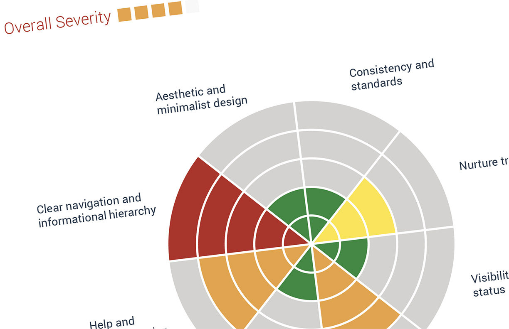
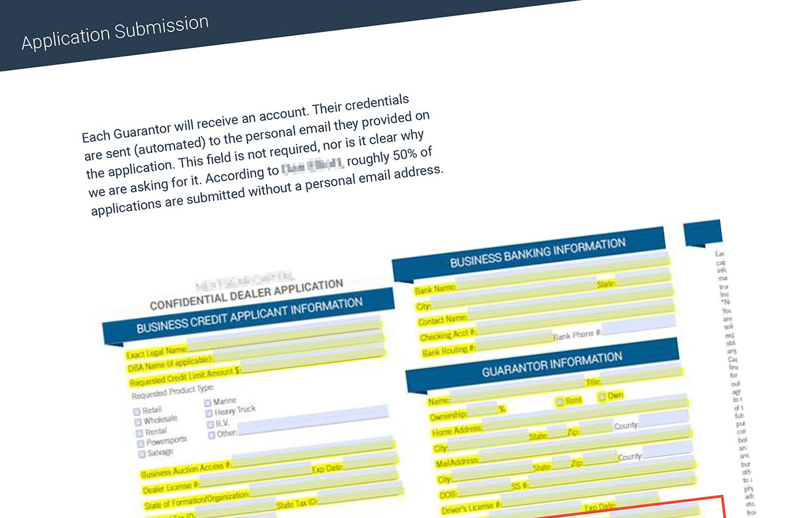
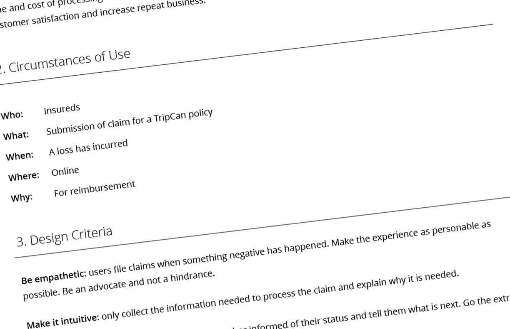
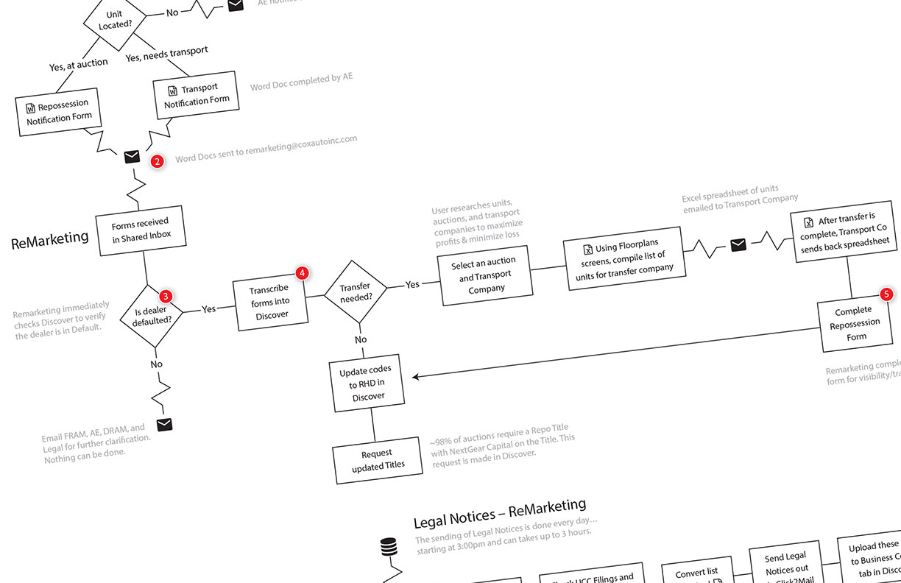
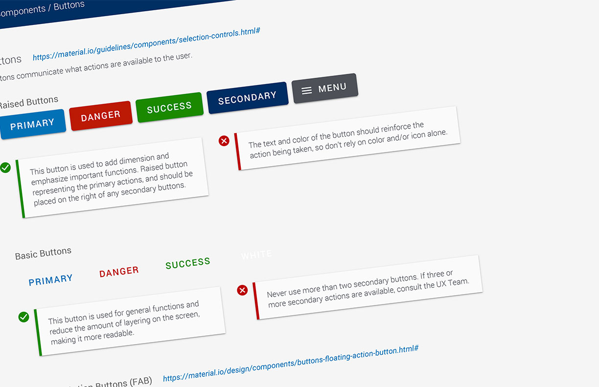
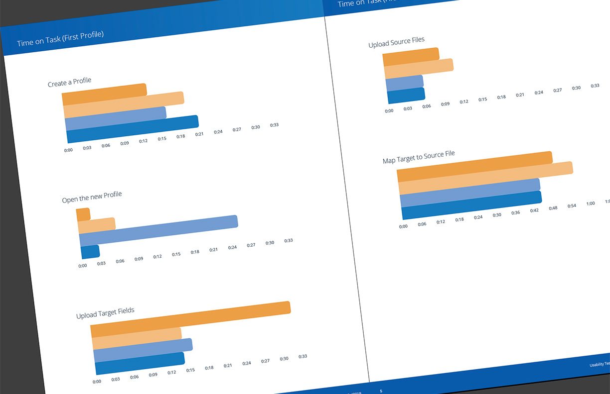
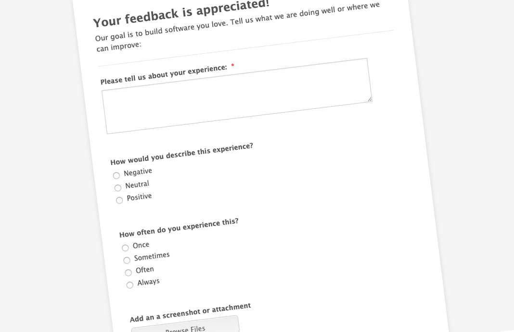

Designer Researcher Strategist
Dinner Meets Tinder
What one person can build with AI
AI is changing how products get built — and the gray areas between disciplines are where things get missed. I navigate those gaps with a consistent, iterative approach: Understand, Simplify, Align, and Validate.
What one person can build with AI
When user stories stopped being enough
The login screen is the easy part
The front door to website conversations
The Value of UX through Rapid Iteration
Building a commercially-viable SaaS product
Establishing a user-centered UX practice
Information Hierarchy & Data Visualization collide
Problems with customers’ credentials
The struggles of establishing a UX practice

picture_as_pdf
picture_as_pdf
picture_as_pdf
picture_as_pdf
picture_as_pdf
picture_as_pdf
picture_as_pdfIf you're looking for a flexible UX powerhouse, Jarrod’s the one to call. Any company would be fortunate to have him on their team. As an added bonus, he's one of the funniest humans I've ever worked with. Brandon C.
Jarrod Murray is not only one of the best UX guys in the biz but he’s also an awesome human. Zach H.
His unique strength is the ability to bridge executives, product teams, engineering, and end users, translating complex operational challenges into practical, scalable solutions. Glenn A.